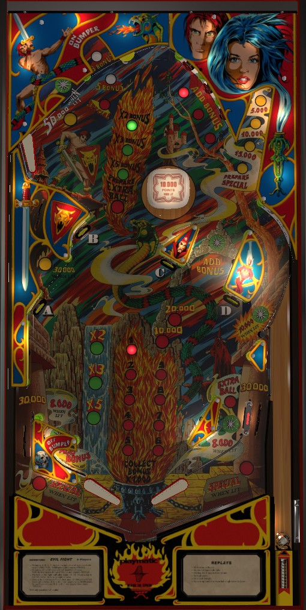

Not to be confused with Evil Dead (Spooky Pinball, 2024).
Start each ball by shooting the top center hole from the lower left flipper 3 times for 5x bonus (or a 4th time if you want to light extra ball on the right in lane as well). After that, build bonus however you like, such as from drop targets, the top left saucer, or using the upper left u-turn to feed the upper left flipper for shots at the red targets. Completing the red targets once lights 30,000 at the middle left lane, and completing them twice lights 50,000 at the upper left u-turn, which are both repeatable once lit.
The below picture of Evil Fight's playfield was taken from the VPX recreation by Pedator and JPSalas.

The upper half of Evil Fight has various hidden passageways which go under plastics, occasionally rendering the ball briefly invisible. There are three paths in the upper left of the game. Shooting the top center of the game just right of the large yellow rubber leads to the top center saucer, and is best done with the lower left flipper. Immediately to the left of the large yellow rubber is the bonus lane. Further left of the bonus lane, separated by another post, is the u-turn, which feeds the upper left flipper for a shot across the table at the red standup targets. The ball can also go under clear plastic in the top right dead-end lane and the middle left side lane.
The first three shots to this saucer on a ball score 500 points each and advance the bonus multiplier to 2x, then 3x, then 5x, respectively. When 5x bonus is reached, the top center saucer will be lit for Prepare Extra Ball, and score 30,000 points when made. This 30,000 can be scored repeatedly until the extra ball, which is lit at the right in lane, actually gets collected. After the extra ball is collected, the top center saucer completely unlights; making it here scores 500 points and relights the saucer for Prepare Extra Ball, which scores another 30,000 points and lights the right in lane for another extra ball. Extra balls can be stacked in this way, and the 30,000 itself is significant score as well.
Each drop target down scores 8,000 points.
The dead-end lane target in the upper right starts at a value of 500 points. This increases to 5,000, then 10,000, then 15,000, then Prepare Special (and 5,000 points) if 1, 2, 3, or 4 drop targets are currently down. The dead-end target also always scores 1 bonus advance. Hitting the target when lit for Prepare Special lights a Special on the out lanes, which alternates between the two out lanes automatically every few seconds.
The top left saucer scores 5,000 points and resets the A-B-C-D drop targets. If either A+B or C+D are down, the top left saucer awards 3 bonus advances. If all 4 targets are down, the top left saucer awards 5 bonus advances, and the next shot to the top left saucer will score a Special. In any other scenario, the top left saucer awards 1 bonus advance.
Whenever both the A and B targets are down, the right in lane is lit for 8,000 points instead of 500.
Whenever both the C and D targets are down, the left in lane is lit for 8,000 points instead of 500. Having both C and D down at the same time at any point lights the star rollover in the right "orbit" for 10,000 points instead of 1,000 for the rest of the ball.
The three red standup targets in the upper half of the playfield can only really be shot from the upper left flipper. The red targets always score 10,000 points and a bonus advance. Hit a target to light it. Lighting all 3 targets resets them and:
The bumper scores 1,000 or 10,000 when lit. It is lit by making the top left saucer, and unlit at the start of each ball or after making the left in lane.
Evil Fight has a conventional in/out lane setup, but with extremely short in lanes. The right slingshot is very small, and there is no left slingshot, with a single post forming the left in lane instead. Out lanes score 30,000 and are lit alternately for Special by hitting the top right dead-end target when all 4 drop targets are down. In lanes score 1 bonus advance plus 500 points if the star rollover is not lit, or 8,000 if it is lit. The left in lane star rollover is lit if both the C and D drops are down, and the right in lane star rollover is lit when both A and B are down. The right in lane is also lit for extra ball after 4 shots to the top center saucer in a single ball.
Bonus is advanced by the middle left side lane, any star rollover, any red target, and the top right dead-end target. The top left saucer awards 1, 3, or 5 bonus advances depending on whether 0, 1, or 2 pairs of drops are currently down (pairs are AB or CD). Bonus multiplier is advanced in the sequence 2x-3x-5x with the first three shots to the top center saucer on a ball. Max bonus is 5x 29,000 = 145,000 points. There is no mid-ball bonus collect or bonus holdover of any kind.
Extra balls can be stacked. I am not aware of any settings that assign a point value to extra balls or Specials.